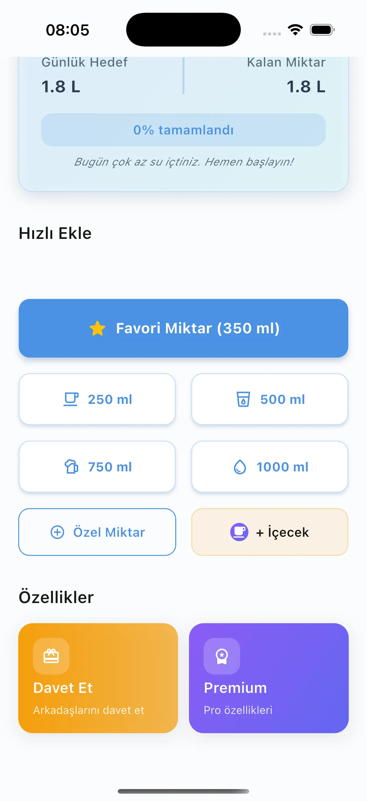
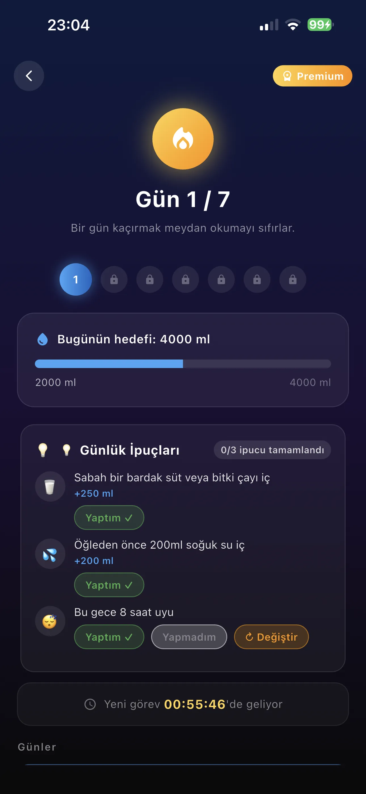

تصميم جميل وسهل الاستخدام
واجهة نظيفة تركّز على شيء واحد: مساعدتك على شرب ماء أكثر بسهولة.





أهداف يومية شخصية، تذكيرات ذكية، دوري الأصدقاء، وأكثر من 100 مشروب — كل ذلك مجانًا على Android وiOS.
Suu يتكيّف مع أسلوب حياتك — سواء كنت رياضياً، موظفاً، أو تبدأ رحلة الترطيب للتو.
حدّد هدفك بناءً على وزنك ومستوى نشاطك والمناخ. يتعلّم Suu ويتكيّف مع تغيّرات نمط حياتك.
إشعارات مبنية على تقدمك الفعلي: "أنت عند 32% من هدفك — حان وقت الشرب!" لا مؤقت ثابت. تذكيرات أقل وأذكى وأكثر فاعلية.
أضف أصدقاء عبر اسم المستخدم أو رمز QR. تابع تقدمهم وأهدافهم اليومية. أنشئ دوري أسبوعي حتى 4 أصدقاء — يعمل على iOS و Android معاً. أرسل إشعار "لنشرب معاً". لا يوجد تطبيق منافس يمتلك هذه الميزة.
قهوة، شاي، عصير، مشروبات غازية — لكل منها معامل جفاف علمي. ستاربكس وسلاسل القهوة الشهيرة في قسم خاص: اختر مشروبك، سجّله، واعرف كمية الماء الإضافية فوراً. معلومات الكافيين والسكر مضمّنة.
+300 مل تُضاف تلقائياً خلال الحمل، +700 مل خلال الرضاعة. حساب مرحلي حسب الثلاثيات، أهداف يومية خاصة بصحة الأم. التطبيق الوحيد الذي يمتلك هذه الميزة.
نقاط ترطيب يومية، اتجاهات أسبوعية، وتقارير مفصّلة قابلة للتصدير بصيغة PDF أو CSV. شاركها مع طبيبك أو أخصائي التغذية.
تتبّع تقدمك من شاشة القفل أو Dynamic Island — سجّل مشروباً دون فتح هاتفك.
واجهة نظيفة تركّز على شيء واحد: مساعدتك على شرب ماء أكثر بسهولة.


يتتبع مستخدمو Suu حول العالم ملايين الأكواب يومياً.
مقالات مبنية على العلم لمساعدتك على فهم أهمية البقاء رطّباً.
انضم لآلاف المستخدمين الذين يتتبعون كميتهم اليومية من الماء مع Suu — مجاناً، بلا إعلانات، بلا اشتراك.